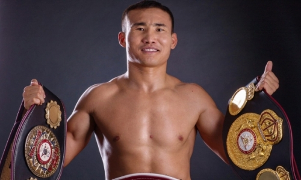
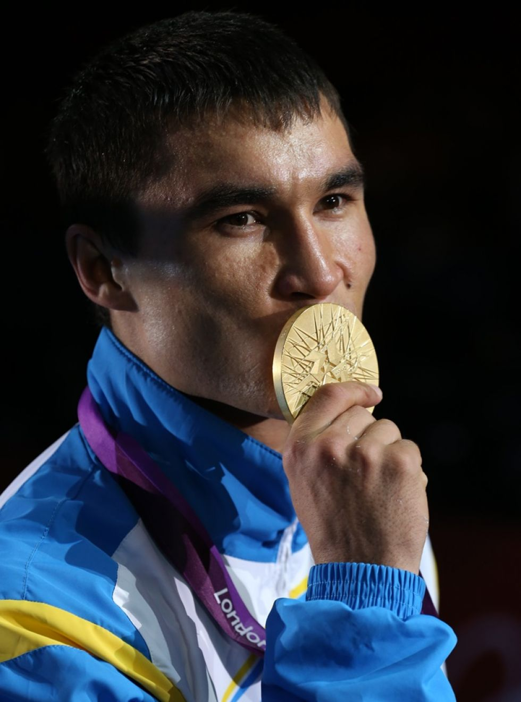

Геннадий Головкин (GGG)

Дата рождения: 8 апреля 1982 года
Весовая категория: Средний вес
Рекорд: 45 боёв, 42 победы (37 нокаутом), 2 поражения, 1 ничья
Достижения:
- Чемпион мира по версиям WBA, WBC, IBF, IBO
- Олимпийский серебряный призёр (Афины 2004)
- Один из самых нокаутирующих боксёров в истории
Завершил карьеру
Василий Жиров

Дата рождения: 4 апреля 1974 года
Весовая категория: Крузервейт
Рекорд: 38 боёв, 37 побед (31 нокаутом), 3 поражения
Достижения:
- Олимпийский чемпион (Атланта 1996)
- Чемпион мира IBF в первом тяжёлом весе
- Лучший боксёр года по версии BWAA (1997)
Завершил карьеру
Бейбут Шуменов

Дата рождения: 19 августа 1983 года
Весовая категория: Полутяжёлый вес
Рекорд: 21 бой, 18 побед (12 нокаутом), 3 поражения
Достижения:
- Чемпион мира по версии WBA в полутяжёлом весе
- Чемпион мира по версии WBA в первом тяжёлом весе
Завершил карьеру
Канат Ислам
Дата рождения: 13 сентября 1984 года
Весовая категория: Первый средний вес
Рекорд: 29 боёв, 28 побед (22 нокаутом), 1 поражение
Достижения:
- Бронзовый призёр Олимпийских игр (Афины 2004)
- Чемпион Азии среди любителей
- Интернациональный чемпион WBA
Действующий боксёр
Жанибек Алимханулы

Дата рождения: 1 апреля 1993 года
Весовая категория: Средний вес
Рекорд: 15 боёв, 15 побед (10 нокаутом), 0 поражений
Достижения:
- Чемпион мира по версии WBO в среднем весе
- Чемпион Азии среди любителей
- Участник Олимпийских игр (Рио 2016)
Действующий боксёр
Серик Сапиев
Дата рождения: 16 ноября 1983 года
Весовая категория: Полусредний вес
Рекорд: Выступал на любительском ринге
Достижения:
- Олимпийский чемпион (Лондон 2012)
- Двукратный чемпион мира (2005, 2007)
- Лучший боксёр Олимпиады (Кубок Вэла Баркера)
Завершил карьеру